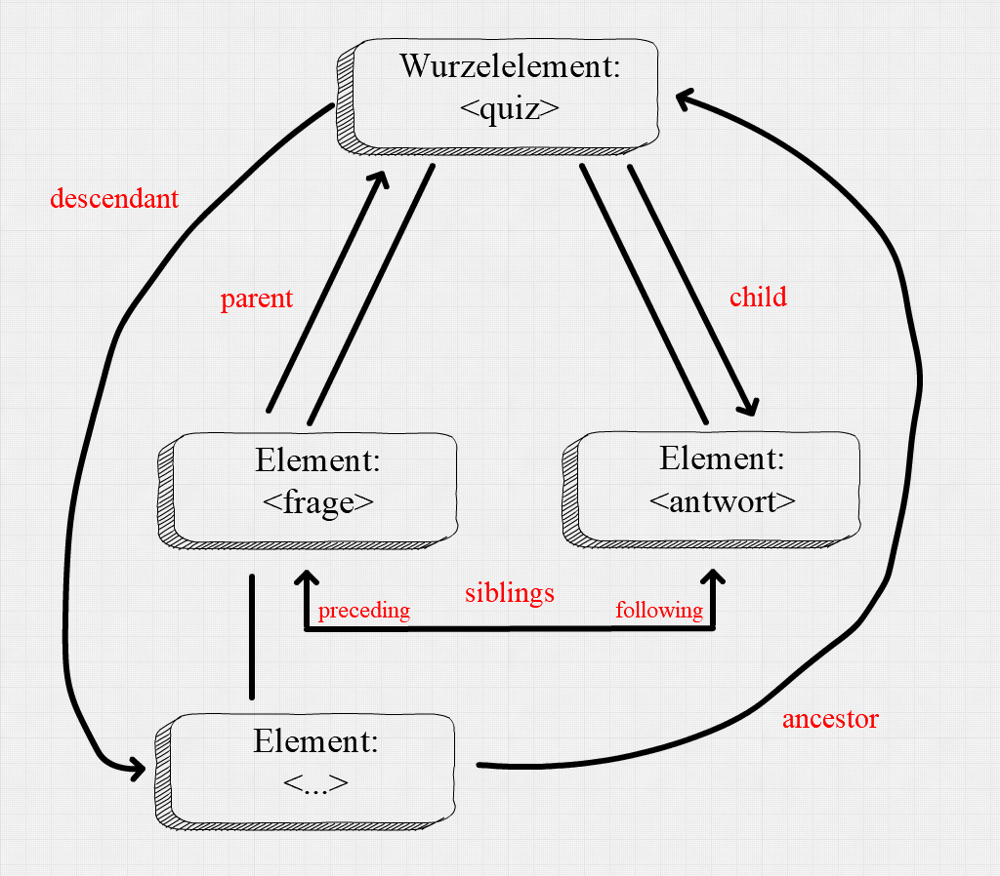

2021 | Mainz
Einführung in X-Technologien
Modellieren, Strukturieren, Repräsentieren
Sektion 2: XPATH
Slides: Link
Max Grüntgens | Dominik
Kasper |  @digicademy |
@digicademy |  digicademy | CC-BY 4.0
digicademy | CC-BY 4.0
Überblick
- Was ist XPath?
- Das Konzept Knoten
- XPath-Achsen-Modell
- Navigation im Baum
- Zugriff auf Knoten
- Konditionen und Funktionen
- Zu mehr XPath-Funktionen
- Arbeiten im Oxygen XML Editor (XPath)
01
Was ist XPath?
XPath
- … dient der Navigation in einen XML-Baum, d.h. in XML-Dateien, indem Knoten-Pfade durch den XML-Baum beschrieben werden und/oder die Position von Knoten (Elemente, Attribute, Text) im Baum verortet wird.
- … dient dem Herausziehen von "Informations-Schnippseln", also einer grundständigen Abfrage oder Suche. Diese "Informations-Schnippsel" können dabei Textstücke, Elemente, Attributwerte, Teilbäume des Gesamtbaumes, u.a. sein.
- … XPath dient als Grundlage für die Arbeit mit XSLT (Transformation) und XQuery (Abfrage).
02
Das Konzept Knoten
Das Konzept Knoten
XML-Baumstruktur: Element vs. Knoten
{kind=link}
{kind=link}
{kind=link}
Das Konzept Knoten
Denken in Knoten (nodes)
| Knotentyp | Erklärung |
|---|---|
| Wurzelknoten | oberster, abstrakter, Knoten des Baumes, Parent des Wurzelelements (Node-Set, String); Zeichenwert: alle Zeichendaten des Dokuments |
| Elementknoten | Knoten, der Knoten- u/o Zeichendaten eines Elements (Node-Set, String) enthält; Zeichenwert: alle Zeichendaten seiner Textknotenkinder |
| Attributknoten | Knoten, der Zeichendaten eines Attributs (String) enthält; separat für jedes Attribut eines Elements, Zeichenwert: Attributwert |
| Textknoten | Knoten, der nur Zeichendaten (String) enthält |
| Kommentarknoten | Knoten, der den Kommentarinhalt (String) enthält |
Es gibt außerdem noch Verarbeitungsknoten und Namensraumknoten, die wir hier aus Zeitgründen nicht näher thematisieren.
XPath-Achsen-Modell
Denken in Achsen (axes)
Achsen
- self (kurz
.) - child (kurz
/) - parent (kurz
..) - descendant
descendant::* - descendant-or-self (kurz
//) - ancestor
ancestor::* - ancestor-or-self
ancestor-or-self::* - following
following::* - following-sibling
following-sibling::* - preceding
preceding::* - preceding-sibling
preceding-sibling::* - attribute (kurz
@)attribute::*
Das * in den obigen Notation steht für jeden Elementnamen (oder Attributnamen bei attribute::), also ancestor::p gibt einen Ancestor-Knoten mit dem Elementnamen p zurück.
Grafische Übersicht wichtiger Achsen
{kind=link}
Zu beachten ist, dass, auch wenn die Achsen durchgehend im Singular notiert sind, je nach Kontext ein Node-Set – also eine Ergebnisliste – zurückgegeben wird, z.B. gibt ancestor alle vorangehenden Elementknoten zurück, nicht nur den ersten.
Auf den Punkt gebracht
in einem Satz
XPath ist eine Sprache zur Navigation in XML-Dokumenten und zur Adressierung, Selektion und Rückgabe von Knoten/Knoten-Sets/Bäumen und Strings/Zahlen/Wahrheitswerten (Booleans) sowie Sequenzen als Reihen dieser Dinge.
Institut für Dokumentologie und Editorik: XML - Kurzreferenz für Einsteiger
Erläuterung
XPath im Oxygen-XML-Editor
Screenshot und Beschreibung einfügen
Navigation im Baum I
Der Zugriff auf Knoten
Der Zugriff auf Knoten erfolgt über sog. Lokalisierungsschritte, die den Pfadangaben von Unix-Systemen ähneln.
Die Pfadangaben müssen immer kontextabhängig gemacht werden und bestehen zunächst einmal aus:
- Achsenangaben, wie
parent::,child::usw. bzw. ihren in der Praxis viel häufiger zu findenden Kurzschreibweisen. - Elementnamen
Beispiele
/TEI/teiHeader/fileDesc/publicationStmt/p/TEI/text/body/descendant-or-self::p//p//p/@n
Navigation im Baum II
Konditionen und Funktionen
Es gibt weitere Möglichkeiten, eine Lokalisierung (in der Pfadangabe) zu konkretisieren und damit bestimmte (Teil-)Mengen auszuschließen:
- Konditionen (auch Prädikate genannt) in eckigen Klammern (
[]) - (String-)Funktionen
Beispiele
//p[@n="1"]//p[not(matches(., '[0-9]'))]count(//p[1])
Navigation im Baum III
XPath-Funktionen (Beispiele)
- Zählen & bestimmen:
count(),substring(),string-length() - Prüfen:
contains(),matches(), ... - Negieren:
not() - Austauschen:
translate(),replace(), ... - Konvertieren:
string(),number(), ... - siehe zum Einstieg die IDE-Kurzreferenzen
- Weiterführend: https://www.data2type.de/xml-xslt-xslfo/xslt/xslt-und-xpath-referenz/alphabetische-liste/
Übung: Formalisierung
XPath ist eine formale Sprache. Man kann, wie wir oben gesehen haben, zwischen normaler (z. B. deutscher) Sprache und XPath hin und her übersetzen, wobei dies zugleich ein Prozess fortschreitender Formalisierung bzw. Operationalisierung ist:
- »Wie alt ist die erste mittelalterliche Inschrift des Landkreises Bad Kreuznach?« wird formalisiert zu ...
- »Bilde die Differenz zwischen dem aktuellen Jahr, bspw. 2021, und dem bei den Kopfmetadaten zu findenden Jahr der Inschrift«. Dies wiederum bedeutet auf XPath-Pseudocode ...
- 2021 − (Jahr-der-ersten-Inschrift), oder als etwas präziserer Pseudocode ...
- 2021 − (Jahr-der-ersten-Inschrift) von
//resource[1], oder als etwas präziserer Pseudocode ... 2021-(//resource[1]/head/dateEnd), ... noch das Jahr extrahieren ...2021-(//resource[1]/head/dateEnd/substring(., 1, 4)), und in eine Zahl verwandeln ...2021-number(//resource[1]/head/dateEnd/substring(., 1, 4))
Abschlussfrage
Warum brauchen wir in einer Abfragesprache, die dem Adressieren und Selektieren dient, Funktionen zum Konvertieren und Umwandeln?
Übungsaufgaben: XPath
Inschriften des Landkreises Bad Kreuznach
Datei: Download der Datei aus dem Repositorium.
- Öffnen Sie die Datei im Oxygen-XML-Editor.
- Verschaffen Sie sich einen Überblick über die XML-Struktur der Datei.
- Beantworten Sie die folgenden Fragen mittels XPath:
- An welchem Ort befinden sich die älteste sowie die jüngste Inschrift in der Datei? Geben Sie auch Ihren eingesetzten XPath an.
- Wie viele Einträge besitzen eine Schriftzuordnung zur Schriftfamilie Kapitalis? Geben Sie auch Ihren eingesetzten XPath an.
- Geben Sie einen XPath an, mit dem man alle Einträge aggregieren kann, die sich möglicherweise mit Inschriftenträgern aus Holz beschäftigen.
- Geben Sie einen XPath an, der alle Einträge aggregiert, die sich möglicherweise in einer Kirche befinden.
- Geben Sie die Anzahl und den dazugehörigen XPath aller Einträge an, bei denen das auf der Inschrift eingemeißelte Datum den Monat Mai angibt.
- Geben Sie einen XPath an, der alle Einträge aggregiert, bei denen es sich bei dem Inschriftenträger möglicherweise um eine Grabplatte handelt.
Übungsaufgaben: XPath
Caesars Gallischer Krieg (englische Übersetzung)
Datei: Download aus der Perseus Digital Library auf GitHub.
- Öffnen Sie die im Oxygen-XML-Editor.
- Verschaffen Sie sich einen Überblick über die XML-Struktur der Datei.
- Beantworten Sie die folgenden Fragen mittels XPath:
- Geben Sie alle distinkten Ortsnamen aus (Tipp:
distinct-values()). - Geben Sie die Anzahl an distinkten Orts-, Stammes- und Personennamen an.
- Versuchen Sie, sich alle Flussnamen ausgeben zu lassen. Was fällt Ihnen auf?
- Welcher Personenname taucht am häufigsten auf? Wie ist das Verhältnis der einzelnen Personennamen zueinander?
- Geben Sie per XPath die Nummern derjenigen Kapitel aus, in denen ein oder mehrere "Druiden" genannt werden.
- Überlegen Sie sich, welche Anfragen Sie gerne noch an den Text stellen würden und benennen Sie die Element- und Attributstrukturen, die hierfür nötig wären.
- Geben Sie alle distinkten Ortsnamen aus (Tipp: